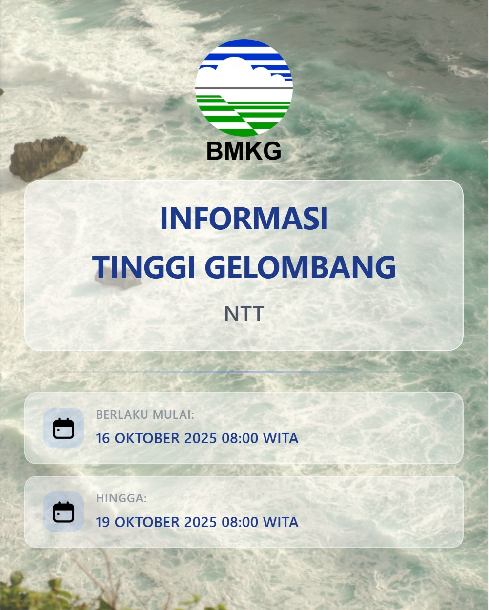
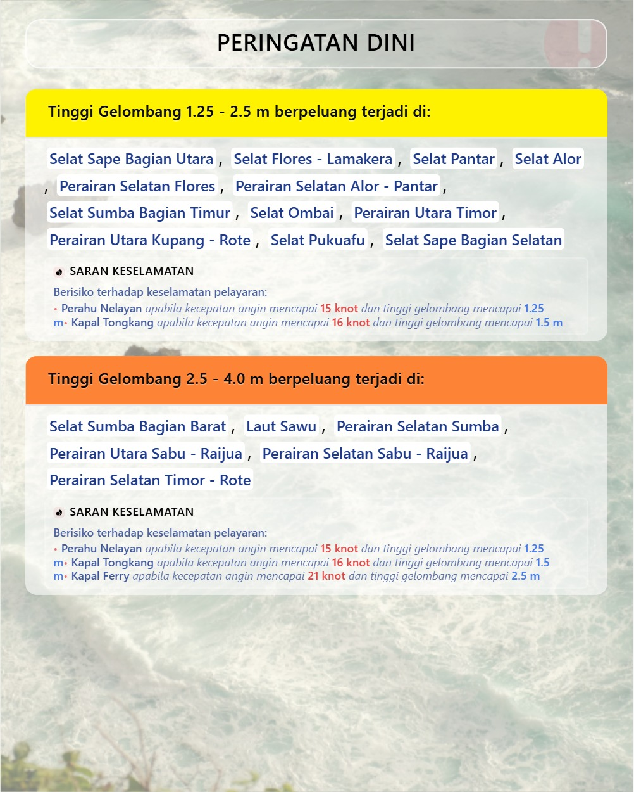
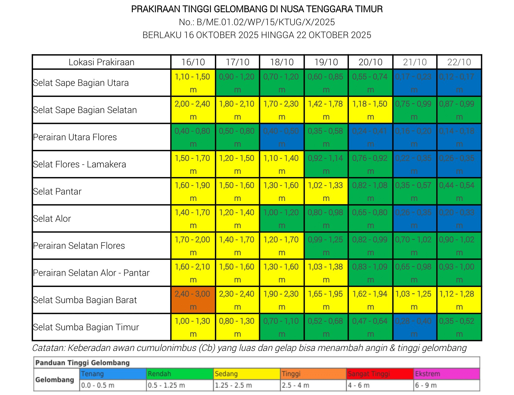
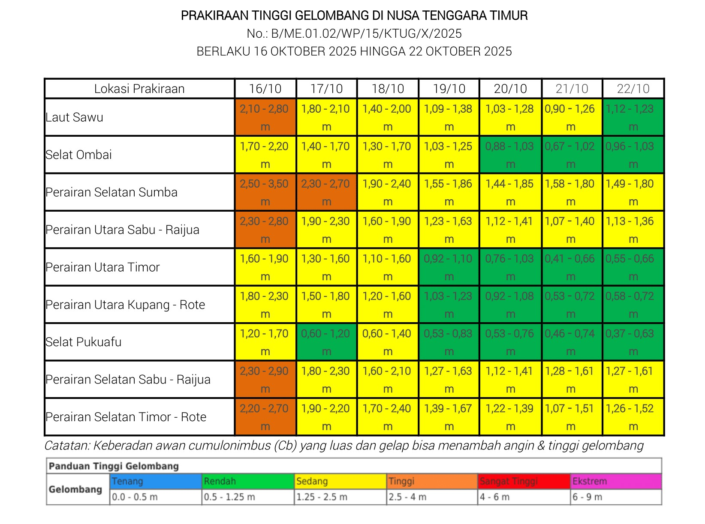
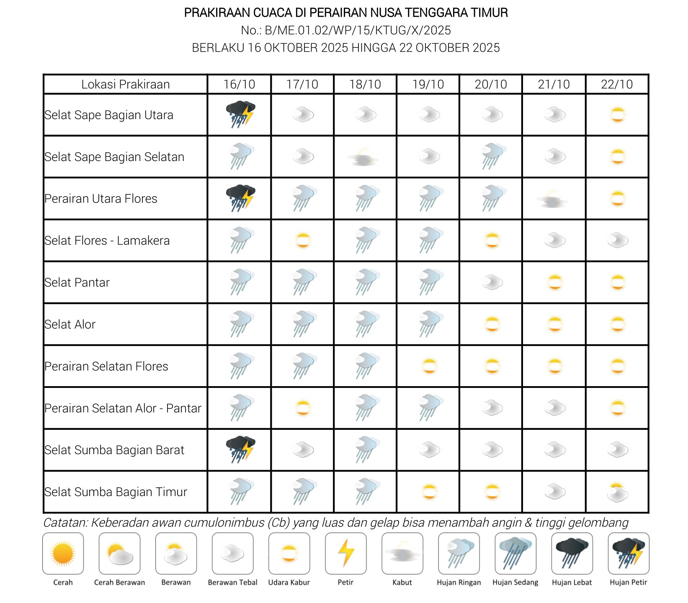
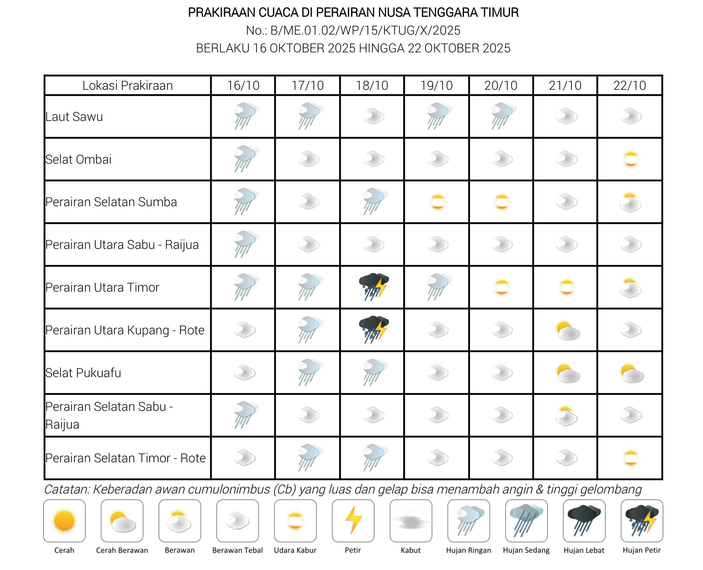
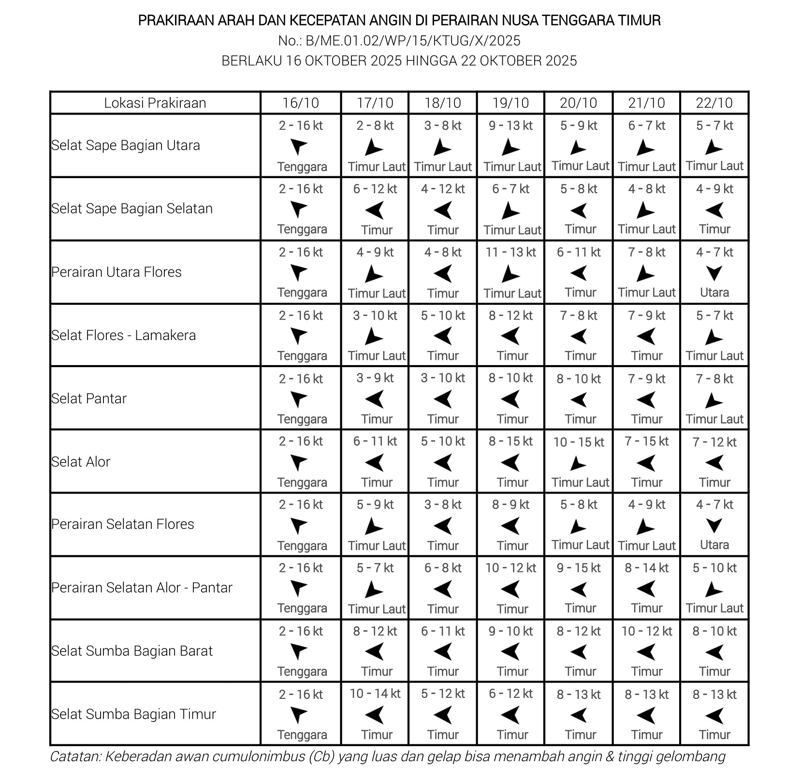
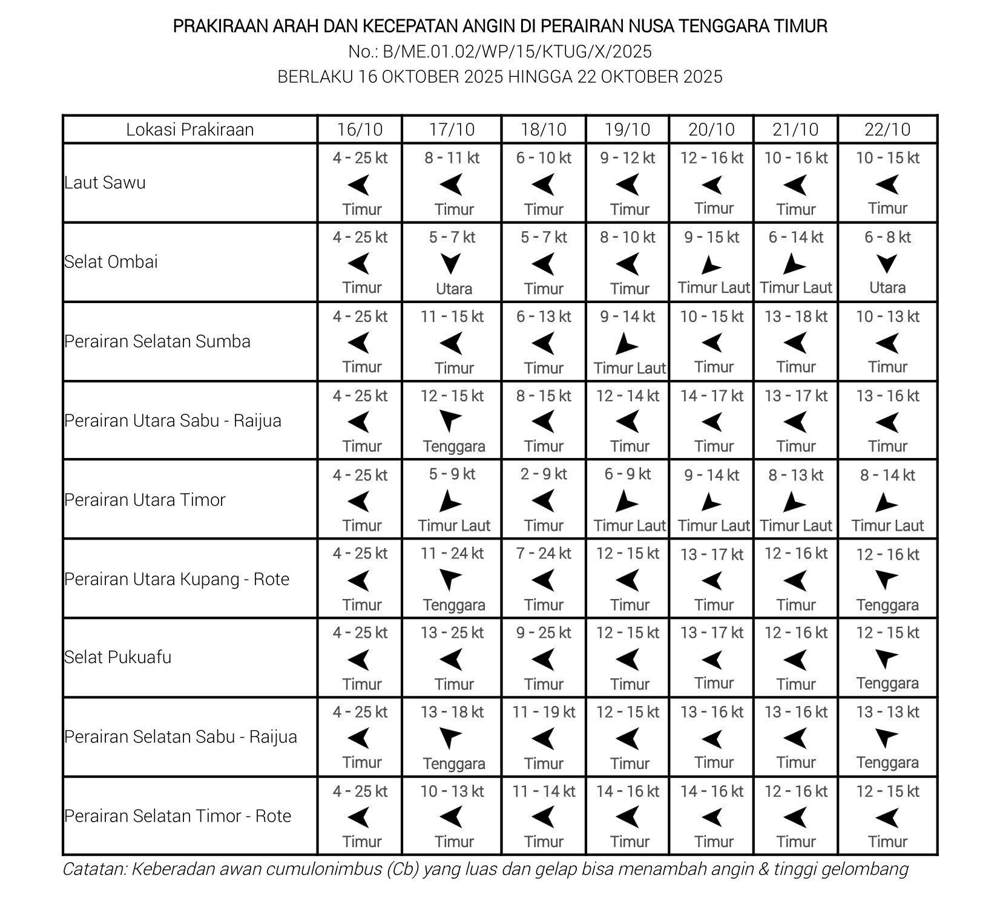

Gambar 1

Gambar 2

Video 1
Gambar 3

Gambar 4

Gambar 5

Gambar 6

Gambar 7

Gambar 8

Tinggi & Arah Gelombang Maksimum Wilayah NTT

Tingkat Kandungan Garam Wilayah NTT

Tinggi Sea Level Wilayah NTT

Kecepatan & Arah Arus Wilayah NTT

Kecepatan & Arah Arus Wilayah NTT
Temperatur Laut Wilayah NTT

Tinggi & Arah Gelombang Signifikan Wilayah NTT

Arah & Kecepatan Angin Wilayah NTT